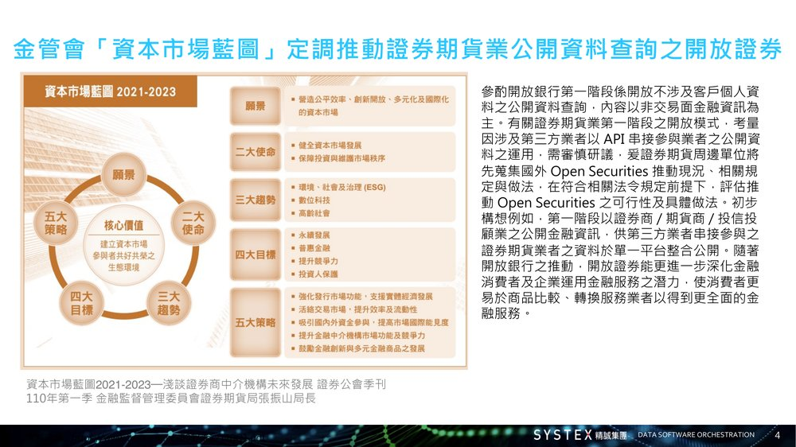
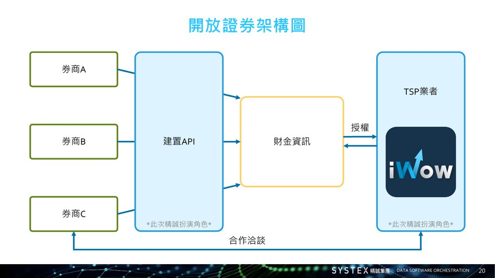
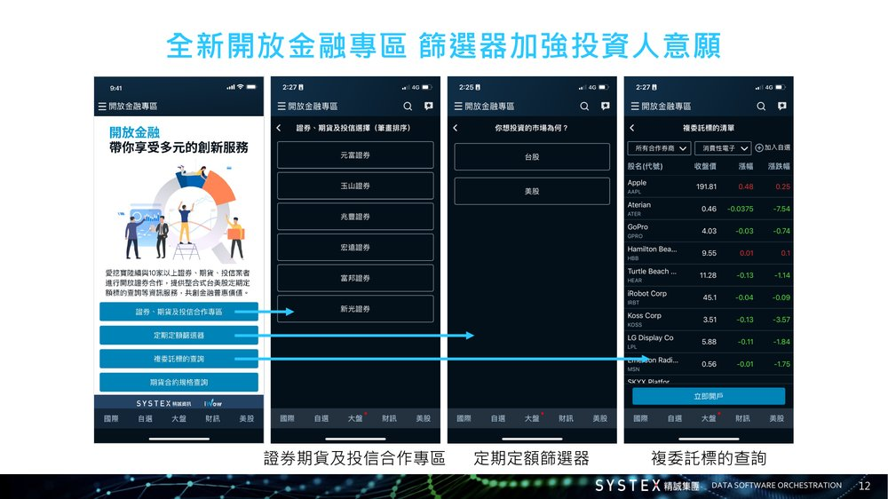
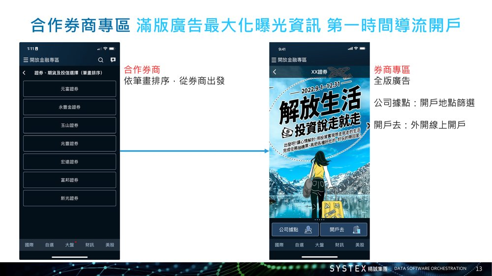
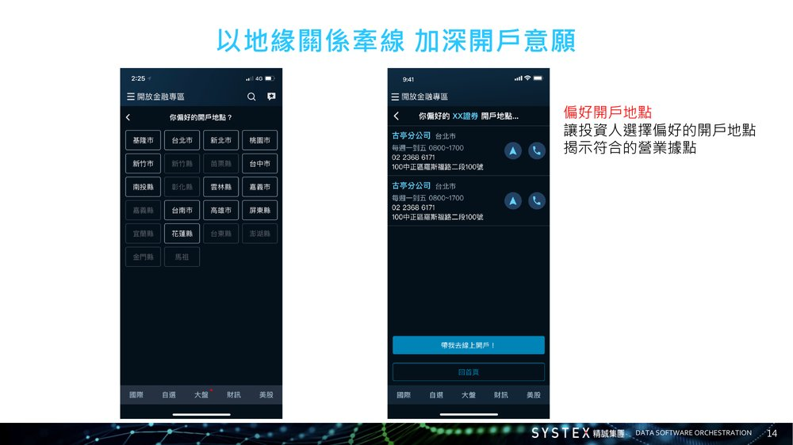
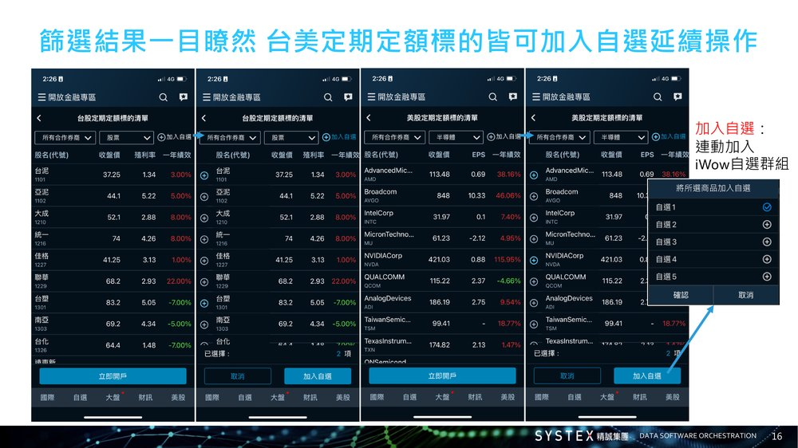
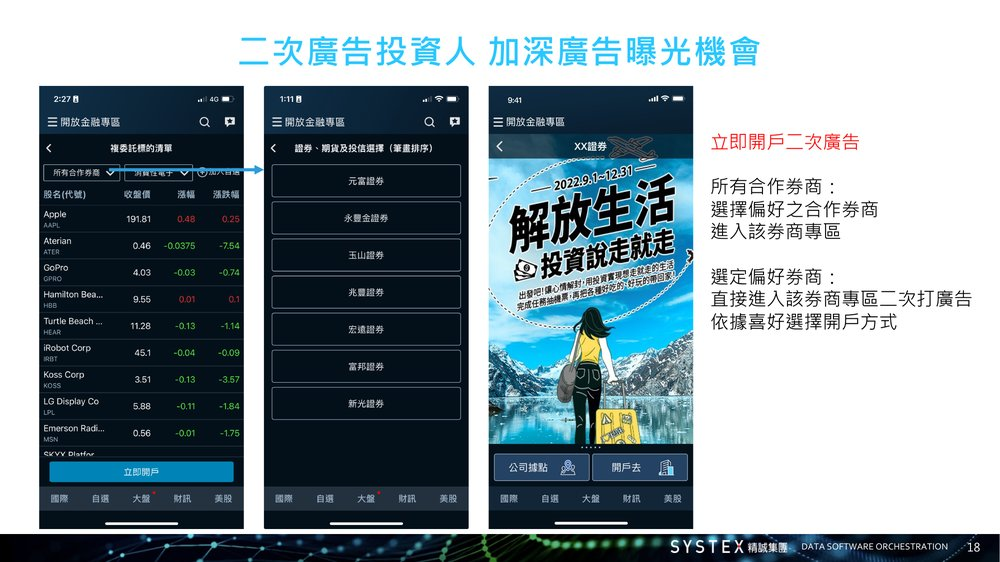

Case Study
Connecting nearly 10 brokerage, futures, and asset-management partners inside a single app, ahead of the rest of the industry
Summary
In response to Taiwan's financial regulator pushing an "Open Securities" policy — modelled on Open Banking — I led the end-to-end build of Taiwan's first third-party Open Securities platform, inside our existing stock-quote app iWow. I owned product strategy, interface design, and frontend development myself, while also negotiating directly with brokerages as partners — ultimately signing close to 10 brokerage, futures, and asset-management firms by launch.
Note — This project was originally built for the Taiwanese market, so interface screenshots and reference materials throughout this case study remain in Traditional Chinese, the product's original language.
Background & Challenge
Taiwan's Financial Supervisory Commission set out a "Capital Market Blueprint" calling for an "Open Securities" model — extending the logic of Open Banking to the securities industry, so that approved third-party providers could integrate brokerages' public data through standardized APIs. This was a policy direction, not yet a finished product; someone still had to build the platform that made it real.
I led Systex's response, building Open Securities directly inside iWow, our existing stock-quote app with over a million downloads — turning a regulatory shift into a concrete product connecting everyday investors with brokerages.

How the Ecosystem Works
Under the Open Securities framework, brokerages expose their public data through APIs; a licensed intermediary (Financial Information Service Co.) manages authorization between parties; and approved third-party providers like Systex integrate that data into consumer-facing products.
My job sat on both sides of that chain — designing and building the consumer product inside iWow, while directly negotiating with each brokerage on the commercial terms that made participation worth their while.

Core Features
One screen, every partner brokerage
Investors browsing iWow's new Open Finance section could see every partner brokerage in one place, then drill into recurring-investment and cross-border sub-brokerage products across Taiwan and US markets — all filterable by brokerage.

Giving each brokerage its own storefront
Each partner brokerage got a dedicated section with near-full-screen ad space for its own campaigns — letting investors move straight from browsing quotes into a brokerage's promotion, with a direct path into account opening.

Turning a nearby branch into a reason to sign up
Investors could select their preferred district, and the app would surface the matching brokerage branch — contact details, hours, and a one-tap call or map action — right before nudging them toward opening an account online.

Letting research end in one tap, not five
Once investors screened recurring-investment targets across brokerages, they could add any of them straight into iWow's own watchlist — turning one-off research into something they'd naturally keep coming back to track.

Meeting the same investor twice
After browsing a brokerage's sub-brokerage holdings, investors landed on that same brokerage's campaign ad a second time — reinforcing the message at the exact moment interest was highest, right before the account-opening prompt.

Beyond the Interface
Delivering this wasn't only a design problem. Alongside product strategy and interface design, I also picked up two supporting roles that made the launch possible: building the actual webview experiences embedded inside iWow myself in HTML, CSS, and JavaScript, and acting as the day-to-day point of contact for each partner brokerage — negotiating terms, onboarding their product data, and managing ongoing content updates on the platform.
I worked directly with our engineering team to define the technical architecture connecting brokerage APIs, the licensed intermediary, and Systex as a third-party provider — making sure everything I proposed to partners was something we could actually ship on schedule.
Outcome & Impact
Open Securities went live inside iWow on June 29, 2023, making it Taiwan's first third-party platform to combine integrated online account-opening, cross-broker product discovery, and brokerage advertising in a single consumer app. Six brokerages were live at launch — Masterlink Securities, E.SUN Securities, Mega Securities, SKIS Securities, Horizon Securities, and Fubon Securities — with connections to more than 10 brokerage, futures, and asset-management firms in total.
Local financial press covered the launch as a step toward Taiwan's broader Open Finance ecosystem, describing Systex's role as a third-party provider helping connect financial institutions horizontally through reliable API integration.
The full build — strategy, design, frontend development, testing, and launch — took about 10 months, running in parallel with ongoing partner sales conversations throughout.
Product strategy, UIUX design, frontend development, and partner negotiation — owned solo from concept to launch
Delivered Taiwan's first third-party Open Securities platform, ahead of the wider industry rollout
Signed and onboarded close to 10 brokerage, futures, and asset-management partners